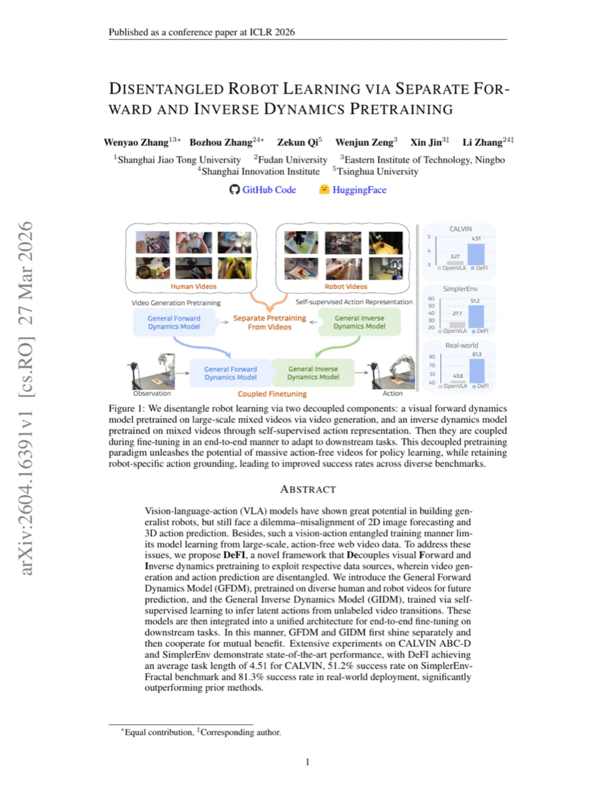
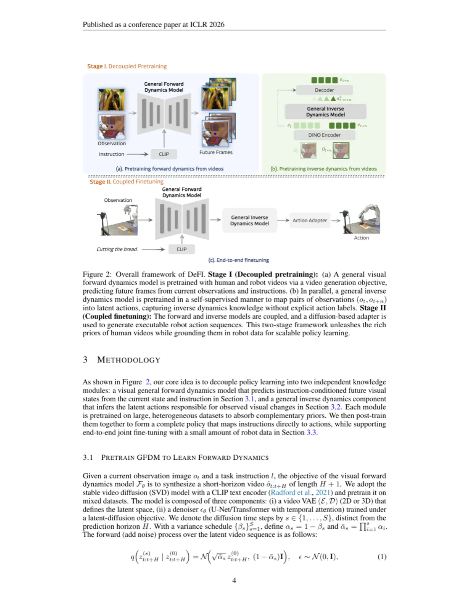
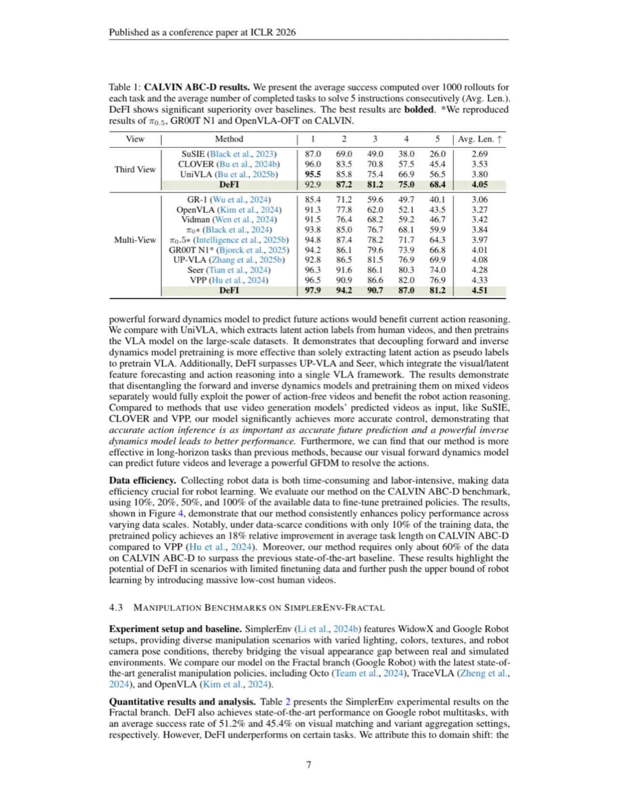
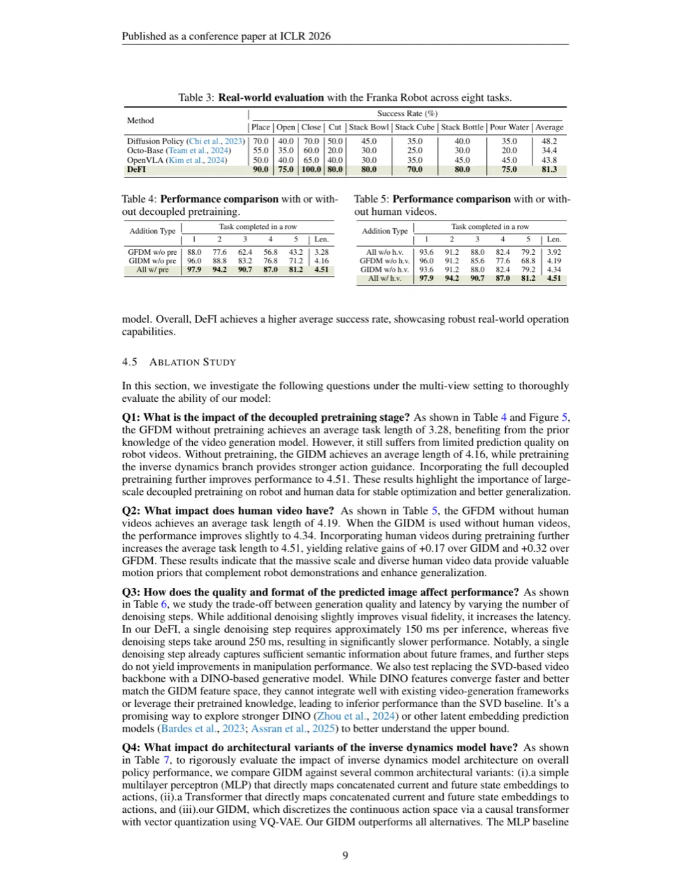
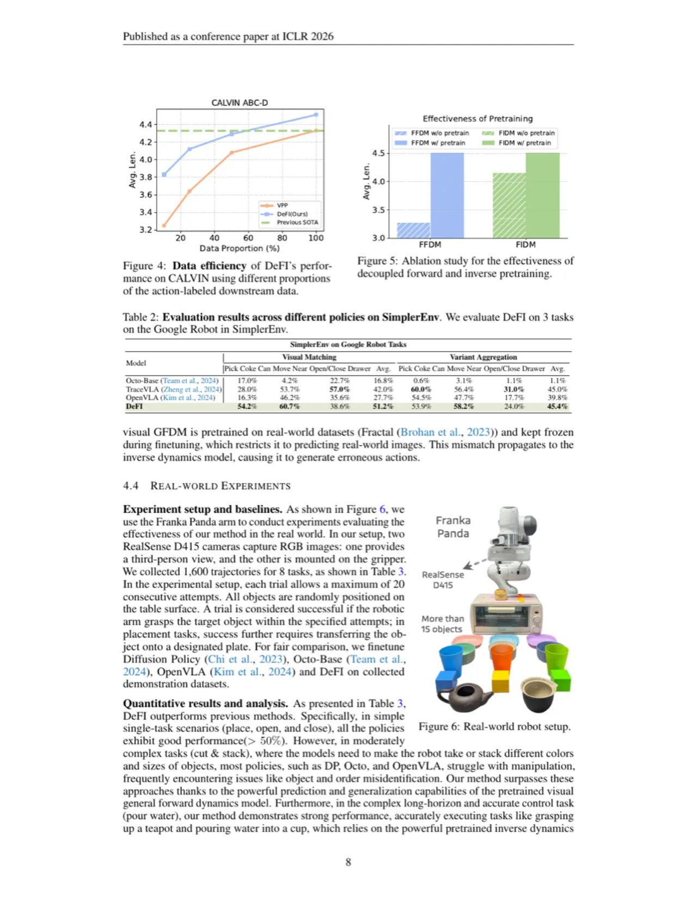

VLA（Vision-Language-Action）模型在构建通用机器人方面潜力巨大，但其将 2D 图像预测与 3D 动作预测耦合训练的方式存在本质矛盾，也限制了从海量无标注网络视频中学习。DeFI 通过将视觉前向动力学（future prediction）与逆向动力学（action inference）解耦预训练，分别利用各自最匹配的数据源，再融合为端到端微调架构——让两个模块先各自发光，再协同增益。
现有 VLA 模型将视觉生成与动作预测捆绑训练，存在两大根本矛盾：其一，2D 图像空间的未来帧预测目标与 3D 空间的精细动作预测目标本质不对齐；其二，这种耦合训练方式使模型无法充分利用互联网上海量的、仅有视觉内容的无动作标注视频数据。
"VLA models have shown great potential in building generalist robots, but still face a dilemma — misalignment of 2D image forecasting and 3D action prediction. Besides, such a vision-action entangled training manner limits model learning from large-scale, action-free web video data."

DeFI 将 VLA 训练拆分为三个阶段：① 独立预训练 GFDM 用于视觉前向动力学；② 独立预训练 GIDM 用于逆向动力学；③ 将两者整合进统一架构后在机器人演示数据上端到端微调。两个模型先各自从最合适的数据中汲取知识，再协同合作共同提升下游任务性能。

GFDM 以当前观测 ot 和语言指令 l 为输入，预测未来视频帧序列。模型基于视频 VAE（2D 或 3D）在 mixed 数据集上预训练：包含多样化人类视频与机器人操作视频，并附加文本条件。由于不依赖动作标注，GFDM 可以利用互联网上大规模的无动作标注视频数据——这是此前 VLA 范式无法实现的。目标函数为预测 latent 的 noise prediction loss。
GIDM 以相邻视频帧对 (vt, vt+1) 为输入，通过自监督学习推断两帧之间发生的隐式动作（latent action）。具体而言，以 NonCausal-Transformer 编码未来帧到 latent action codebook（VQ-VAE 量化），再以 Causal-Transformer 从当前帧出发重建未来帧，从而学习有意义的动作表征而无需任何动作标注。预训练后，GIDM 的 latent 动作将作为 action adapter 的输入，并以下游任务的机器人本体动作（proprioceptive actions）作为监督信号进行微调，使用的是 diffusion-based adapter。
微调阶段，GFDM 先预测未来帧，将预测的视觉特征（intermediate embeddings）注入 GIDM，从而将丰富的视觉先验引导动作推断。GIDM 接收当前观测、语言指令及 GFDM 提供的未来视觉特征后，经由 diffusion-based action adapter 输出最终机器人动作序列。这一设计既保留了两个预训练模块各自的专长，又通过端到端的梯度传播实现了协同优化。
在三大评测基准上与先前最优方法对比：CALVIN ABC-D（长序列多任务操作）、SimplerEnv（Fractal 与 Bridge 子集）以及真实世界 Franka Robot 部署。同时进行消融实验分析各组件贡献与预训练规模的影响。

| Benchmark | 次优方法 | DeFI（本文） | 提升 |
|---|---|---|---|
| CALVIN ABC-D（Avg. Len.） | VPP 4.08 | 4.51 | +10.5% |
| SimplerEnv-Fractal（SR%） | π₀ 48.4% | 51.2% | +2.8pp |
| SimplerEnv-Bridge（SR%） | OpenVLA-OFT 44.8% | 49.8% | +5.0pp |
| Real-world（SR%） | — | 81.3% | — |


消融实验进一步发现：① 将 GFDM 预训练移除后性能下降约 0.32 Avg. Len.；② 移除 GIDM 预训练则下降约 0.36；③ 在 Coupled Finetuning 阶段，将 GFDM 的中间表征注入 GIDM 比仅使用预测帧提升更明显，验证了特征级融合的重要性。使用 VQ-VAE 量化隐式动作相比连续 latent 提升了动作表征的稳定性，减少了训练中的梯度干扰（gradient interference）。
GFDM 的未来帧预测质量直接影响下游动作质量。作者在附录中指出，当视频预测出现较大误差（如快速运动或遮挡场景）时，注入 GIDM 的视觉先验可能引入噪声，进而影响动作精度。论文建议后续工作探索更鲁棒的视频生成基础模型。
在推断阶段 GFDM 需要先生成未来帧（latent video），再传递给 GIDM 解码动作。相比直接动作回归的 VLA，这一两阶段推断流程增加了推断延迟，可能限制对实时控制频率要求极高的任务场景。论文中未报告推断速度数据。
真实世界评测仅在 Franka Panda 平台上进行，任务种类和数量相对有限，且未涉及双臂、移动底座等更复杂的机器人系统。泛化到其他硬件平台的能力需进一步验证。
作者诚实地指出，在 SimplerEnv 的若干特定子任务上，DeFI 并未全面超越所有 baseline（如在某些 Bridge 子集任务上与 OpenVLA-OFT 接近），并将其归因于预训练视频数据域与 SimplerEnv 仿真环境的分布差距。